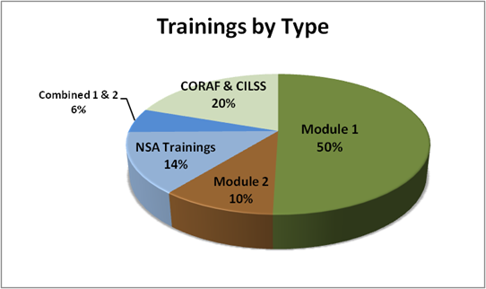
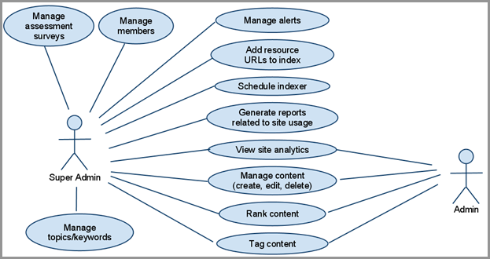

Introduction - Purpose
The purpose of this report is to describe USAID’s Africa Lead program and summarize the four tasks that were implemented over the three-year time period of this program (September 2010 – November 2013). This report is also written to both present the results and outcomes of the program (Activities section) as well as capture the main lessons that have been learned during the design, customization and implementation of all of the Africa Lead’s tasks (Lessons section).
Background and History of Project
The purpose of this report is to describe USAID’s Africa Lead program and summarize the four tasks that were implemented over the three-year time period of this program (September 2010 – November 2013). This report is also written to both present the results and outcomes of the program (Activities section) as well as capture the main lessons that have been learned during the design, customization and implementation of all of the Africa Lead’s tasks (Lessons section).
Africa Lead is a region-wide program sponsored by the U.S. government’s Agency for International Development (USAID) designed to support the capacity building program of the U.S. Government’s Feed the Future (FTF) Initiative, which aligns U.S. Government development assistance with Africa-owned agriculture development plans that are, in turn, aligned with the African Union’s Comprehensive Africa Agriculture Development Program (CAADP). These CAADP plans and initiatives seek to contribute to the Millennium Development Goals (MDG) by both encouraging and ensuring that governments throughout the continent apply 10% of their public budgets to agriculture in an effort to achieve the 6% annual growth in agricultural productivity that is needed to achieve sustainable food security throughout the continent.
Africa Lead-supported human and institutional capacity development was initially a two-year task order under the RAISE Plus Indefinite Quantity Contract (IQC) mechanism, designed to run from September 20, 2010 to September 30, 2012, with a budget ceiling of $21,332,381. However, on September 30, 2012 the contract was modified to extend the program for one more year (through September 2013) and raise the ceiling by $4,850,000 to $26,182,381. In addition, Africa Lead received a 3-month no cost extension in September 2013, putting the final end of contract as November 30, 2013.

Over the three years, Africa Lead has provided support to the Missions through leadership and customized training, capacity assessments, logistical support for training and internships, and a database of training offerings on the continent that can be matched to the leadership training and capacity building needs.
The program has been implemented by lead RAISE Plus (Rural Agricultural Income and Sustainable Environment Plus) IQC holder, DAI, supported by Management Systems International (MSI), Winrock International, Training Resources Group (TRG), ECI Africa Consulting (Pty) Ltd., and Michigan State University (MSU). Each partner plays a specific role in the implementation of Africa Lead and works collaboratively to carry out the complex project, always adapting together to provide a flexible mechanism that can meet the needs of the Missions.
Goals and Purpose of Africa Lead
Africa Lead’s Four Main Goals:
- To provide training to strengthen capacity of African professional to assume leadership roles in their own institutions for moving the CAADP agenda forward
- To provide organizational and logistical support to participant trainings in priority areas
- To assess human resource and institutional capacity to inform the types of training and investment that will impact the ability of key institutions to meet FTF larger goals
- To develop a data base of African institutions who can provide training in priority areas
Economic growth in Africa has begun to accelerate, but poverty remains extensive and food security continues to be a challenge on the continent. This is because agricultural productivity, the foundation of food and financial security has been lagging. The African Union’s CAADP is designed to confront this reality and lay the groundwork for “transformative” change in agriculture.
The objective of the Africa Lead program is to support this transformation by strengthening a cadre of African professionals able to design, implement and measure the impact of food security policies and programs that will strongly affect productivity and food security. Africa Lead represents an early and important part of the U.S. Government’s FTF capacity building approach which aligns U.S. Government development assistance with Africa-owned agriculture development plans that are, in turn, aligned with the African Union’s CAADP.

Ultimately, in order to achieve the ambitious goals of CAADP and FTF, the Africa Lead program is designed to enhance scalability and sustainability in the development of evidence-grounded agriculture and food security policies and programs. This is achieved by expanding the number of experienced professionals in African organizations – government, non-government and private – with the mindsets, skills and technical expertise to assume leadership roles in moving the CAADP agenda forward.
The Africa Lead mechanism provides support specifically to the FTF initiative for the USAID Southern, East and West Africa Regional Missions and to local Missions in all 12 African FTF focus and FTF-aligned countries through a variety of capacity building activities.
The FTF initiative calls not simply for host-country partnership but country leadership. So by working across public and private institutions, Africa Lead works to build the capacity of Africa’s emerging food security leaders to devise and manage their country investment plans through activities such as, but not limited to, developing and delivering leadership and innovative trainings, conducting institutional capacity assessments, supporting business-to-business exchanges (professional internships for agricultural professionals) and student internships, providing logistical support for trainings and conferences, and creating a database of African leadership and capacity building trainings.
Africa Lead’s goals focus on the achievable objectives of contributing to the increase of the institutional and individual capacity for food security programming. In addition, throughout the three years Africa Lead also has implemented activities that contribute indirectly to the overall goals of FTF and CAADP : Reducing poverty and hunger in focus countries (G1) and Increasing agricultural productivity (G1.1) as is illustrated in the projects Results Framework. (See Appendix V for Africa Lead’s Results Framework.)
The results framework lays out the project’s strategy to both achieve the objectives of the project and contribute to the higher-level goals of FTF and CAADP. Although these two higher level goals are out of the manageable control of the Africa Lead project, Africa Lead has been able to provide needed support to FTF and CAADP’s lower level goals of Implementing, funding and approving country investment plans (G1.2) and Improving the performance of key institutions in implementing their CAADP agenda (G1.3).
The Africa Lead’s strategic objectives (SO) of:
- Increasing the participation of African leaders and institutions engaged in the CAADP process (SO1) and;
- Strengthening key leaders technical and managerial skills and knowledge of agriculture systems and food security (SO2)
directly support the FTF and CAADP G1.2 and G1.3, which in turn support the overall goals G1 and G1.1. In addition, Africa Lead’s strategic objectives are also supported by the project’s lower level intermediate results, which are illustrated in the causal chain of the results framework.
Structure of Africa Lead
The Africa Lead Chief of Party (COP), the Operations Director and other central management support functions of operations, including program finance, and monitoring and evaluation are all located in the headquarters office. In addition, other Africa Lead team members from the implementing partners based in the Washington, DC area (MSI, TRG, WI), provide some of the technical support for institutional capacity assessments, curriculum design (especially the initial development of the signature Africa Lead “product,” the Champions for Change leadership training), internships and short trainings, the short course database, and the lessons learned research.
Primary responsibility for program activity in the field lies with the regional offices located in Africa, each managed by a Deputy Chief of Party (DCoP), who functions as the Regional Program Director. (See Appendix III for organizational chart.)
Originally there were three offices: The West Africa regional office in Accra, Ghana, The Southern Africa regional office in Pretoria, South Africa and the East Africa regional office, based in Nairobi, Kenya. However, in July 2012, the third office in South Africa was closed and responsibility for all Southern Africa activities was assumed by the Nairobi, Kenya office, which became the East and Southern Africa (ESA) office.
Africa Lead was initially set up with funds from USAID/Africa in Washington, as well as the East Africa, West Africa and Southern Africa Missions. However, the project is designed so that all USAID bureaus, the three regional Missions and the 12 bilateral Missions of priority FTF countries could easily “buy-in” for specific services from Africa Lead, which most did. Although this involves some challenges and complexity and requires a great deal of flexibility within each of the Africa Lead offices, it has allowed the project to meet the specific needs of the Missions and work collaboratively with them to adjust the activities to achieve desired results. This flexibility and responsiveness shows throughout the work of Africa Lead and has became one of the main qualities in the program’s success.
To address the main capacity building needs identified by USAID in designing Africa Lead, the program is organized along four main tasks or service areas, each focusing on different key components of the project designed to support each of its strategic objectives. Each Task area is led by a Task leader, who is then overseen by the COP.
Africa Lead’s four task areas are:
- Task One: Transformational Leadership Training and CAADP Sensitization
- Task Two: Technical and Third Party Training, Conferences and Other Innovative Learning Experiences
- Task Three: Institutional Capacity Needs Assessments
- Task Four: Database of Technical and Managerial Short Courses on Offer from Universities and Training Institutions
Each of these tasks has several subtasks, programs and activities. For example, Task One includes the design and delivery of leadership and change management training modules, Module One (Champions for Change) and Module Two (Project Design and Rapid Results Approach).
Task Two encompasses all of the customized trainings and innovative learning approaches, such as, the Business to Business exchanges (B2B)¹ as well as logistical support for workshops and for participants to attend specialized third-party training courses.
Task Three includes all of the institutional and process capacity assessments and Task Four is the development and transfer of the training database.
Each of these task areas plays its role in supporting Africa Lead’s overall objectives and each of these tasks is described in detail in the following section on Activities along with the results and outcomes for each.

Task One: Transformational Leadership Training and CAADP Sensitization
Overview and Methodology
The Africa Leadership Training and Capacity Building Program, in particular Task One, is designed largely on the premise of the critical importance and need for leadership and change management training aligned to CAADP. The leadership training is intended to increase knowledge of the principles, approach and goals of CAADP. Equally importantly the training addresses the need for change management and results-based management throughout organizations in the agriculture sector attempting to address the challenges to achieving greater agricultural productivity and food security. With this in mind, Africa Lead has developed and delivered two training modules focused on leadership and rapid results.
The first training, Module One (“Champions for Change”), was developed soon after the start of the contract in September 2010 and began to be delivered in January 2011. It is a five-day course focused on leadership skills that introduce CAADP, the FTF initiative, and some key aspects of strategic planning, leading and managing change, and performance monitoring & evaluation (M&E).
The Module One training was followed in October 2011 with the delivery of Module Two, which is designed to teach skills in project and program design and management, monitoring and evaluation methodologies, team building and the Rapid Results Approach (RRA) to support the movement for the implementation of CAADP National Agriculture Investment Plan (NAIP) ¹. These trainings draw participants from multiple countries and contain sessions focused on leadership skills for food security and CAADP.
Since the goal of Task One is to generate a network of strategically-placed, skilled food security “Champions” in each country who are informed about, and committed and motivated to engage collectively around CAADP, Africa Lead works closely with Missions, donors and other projects and counterparts to select participants. When the Africa Lead program began in late 2010 and continually throughout the project, the Bureau of Food Security asks Regional and local Missions and their African counterparts to identify mid-level professionals working in agriculture and food security to participate in a training program to develop leadership skills and knowledge relevant to moving the CAADP process forward at the national level.

Although separate Module One and Two training workshops are the main forms through which the leadership and project management skills are provided under Task One, both Modules are also customized, abridged and adapted to meet the needs of the different stakeholders and reach a wider set of audiences.
Among the most interesting customizations of the Task One training is the development of abbreviated leadership “Super Champions” training workshops for senior officials, including parliamentarians, ministers and governors. These generally involve compressing the five day training into one day and were specifically advocated by the Champions who had gone through the longer training. An early reaction on the Champions’ part was “You should be providing this training to our bosses.”
Module One General Agenda
- Day 1: Develop common understanding of CAADP & FTF frameworks and programs; assess status of change in country teams; identify challenges to change
- Day 2: Leading & managing change
- Day 3: Strategic planning & priority setting tools; Advocacy & Communication; Changing mindsets to enable change
- Day 4: Understanding the country change initiative plans and implementation process; Prioritizing & planning for carrying out individual & team change initiatives
- Day 5: Creating plans for using skills & implementing plans developed
There are, however a number of permutations of customized Module One and Two training workshops (See chart Trainings by Type and for further explanation of additional trainings, see Task Two).
Overall the core trainings in Task One are roughly broken down into four categories:
- Module One: CAADP Champions for Change, a 5-day course about CAADP and leading change.
- Module Two: A second 4- or 5-day course, tailored to each country, developed to equip CAADP leaders to operationalize investment plans (included Rapid Results Approach).
- Abbreviated Module One: Super Champions, a 1-day course condensing key elements of Module One for Parliamentarians, Ministers and Governors.
- Customized/Blended Task One Training: Module One & Two Hybrid
Each Module contributes to the overall project goal of strengthening the leadership and management capacity of African agricultural professionals. All of the modules incorporate approaches designed to change mindsets and views about each person’s actual and potential role in food security, and institutional and policy that promote innovative responses to food security. The trainings are designed to help foster leadership networks of food security Champions across the continent to help reinforce a transformed approach to development that is evidence based, strategic and results-focused.
Africa Lead, under Task One, has trained 1,781 (1,188—Male, and 593—Female) mid- and senior-level professionals in leadership, change and program management, CAADP principles, processes and goals (this number includes participants from Module 1, Module 2, and combined/blended Module 1&2 trainings).
CAADP “Champions for Change” graduates are English or French speakers from 34 countries in sub-Saharan Africa who work across a broad range of agriculture and food security sectors: 44% from the public sector, 29.5% from NGOs and civil society institutions, 13% from the private sector, and 12% from universities and research institutions.
Module One: Champions for Change Leadership Training
Module One Overview
Module One was launched in January 2011 as a five day course designed to fill the leadership and management gap observed in some agriculture institutions and identify, prioritize and implement strong agriculture policies, investments and programs. The goals of the training are to increase: (1) knowledge of CAADP, (2) participation in CAADP implementation and, (3) leadership and change management skills.
In late 2010, Africa Lead’s senior trainers and designers completed a draft curriculum and assembled a dozen potential trainers for a three day Training of Trainers (ToT) and curriculum validation in Nairobi. Working together with excellent regional trainers the TOT trainers solicited African examples that ensure maximum impact of the training when rolled out in countries and regions.
The Africa Lead senior trainers have taken great care to select regional facilitators/trainers for the workshops who are sensitive, responsive to body language, effective with participants, who ask open-ended questions to bring out and engage participants, and who understand the material on a technical level. From the ToT group, eight were selected to deliver the Module One leadership and CAADP program sensitization training.
The ToT training comprises 40 hours of exercises on topics including:
- Food Security,
- CAADP Principles
- Leading and Managing Change
- Strategic Thinking and Planning
- Visioning
- Stakeholder Analysis
- Capacity Needs Assessments
- Monitoring and Evaluation
- Advocacy
One of the most important and critical outputs of the initial sessions was a significant unanticipated benefit of the trainers “Africanizing” the curriculum during the ToT process. The trainers added and adjusted elements of the training to fit the social context of Africa, which became one of the key contributions to the success and acceptance of the training by the participants. These adjustments include the picture and story of the Little Girl, the Animal Game and the symbolism of filling the African Pot with grain. These elements are most often mentioned in follow up interviews with the participants as having had the greatest impact on them during the training and remain a motivating force that they carry with them even after the training is over.
Of particular impact is the image and accompanying exercise of the little girl who is used to reinforce the urgency and effects of food insecurity as well as the long term impact of having insufficient food as a child. In general, the Module One curriculum takes large concepts such as poverty, gender inequality and hunger to a personal level and with the additions from the trainers, like the girl, these topics have had even more of an impact than ever anticipated.
Task One uses a highly participatory approach designed using the best practices for adult learning and utilizing the extensive depth of experience and knowledge of the curriculum developers. It also uses a variety of different learning styles, including visual, audial and kinesthetic.
Each workshop session includes elements catering to each learning style with breakout sessions for small groups to interact, share and relate content to their own life experience. In most training workshops each session brings together participants from different countries and sectors giving them a platform to share, compare and contrast experiences as they develop personal and country action plans. Most Module One workshops held were residential, which facilitate an extremely important contributor to expansion of professional networks, through participant engagement with one another throughout the training.
Overall, the purpose of Module One is to provide leadership training that enables a more effective shared vision around investment programs, secures public and donor funding for priority programs, and drives the CAADP agenda. To help support this, Module One focuses on maintaining a shared vision, and building up a “critical mass” of champions who constitute a community of practice, and can advocate for the resources and political support to achieve key agriculture and food security goals.

Module One: Outputs, Outcomes and Results
Module One was launched in January 2011 and by the end of that year a total of 1,089 Champions had been trained. In subsequent years the “Champions for Change” training continued to be conducted but the focus switched to Module Two and other customized trainings and internships.
Overall, 1,343 participants (869 males and 474 females) have received Module One Champions for Change training by the end of the project. Most of the Champions are from East Africa representing a variety of sectors with 32% from the civil society, 16% from the private sector, 13 % from research/university sectors, and 38% representing Government staff.

To understand and communicate how Module One training is affecting participant behavior, following the training Africa Lead administers a Pre and Post Survey in conjunction with the training, as well as sends participants a six month follow-up survey by email using a survey application called Survey Monkey.
In addition, a small sample (100) of Champions and other stakeholders in Africa Lead have been intensively interviewed to more deeply get at impact, with each interview lasting for more than an hour. This research is presented in the report: Energizing Champions for Food Security: Reflections on What Works, Why, and What are the Challenges.
Africa Lead has received the results of 1,260 Pre-Surveys and 1,222 Post-Surveys. This contrasts to the lower but still respectable 46% response rate to the Survey Monkey survey in which 622 of the 1,343 Champions responded to the emailed questionnaire six months after taking the training.
A total of 98% of participants consider training quality to be excellent or good, with 99% reporting that the usefulness of the content is good or excellent. In the six month follow up survey 52.5% of participants respond that the training is far above the average training, with an additional 33% responding that it is slightly above average (for a total of 85.5% reporting the training to be above average).
“The Africa Lead training, to me it’s been such tremendous help. I mean in terms of leadership because I think in the Ghanaian setting we don’t place that much important in leadership training or in leadership…but after the Africa Lead training, I got to understand what is required of a leader to improve my skills as a leader. I learned a lot of things that to me mean how to make decision, how to build consensus, how to filter through and prioritize all of those. I think it had helped me as a leader and also as a business woman.”
- Champion from Ghana
Overall, Module One is considered by participants to be very successful in delivering the content of the training. The majority of participants report that they have improved their knowledge a lot during the training in Advocacy (72%), Strategic Thinking (85%), Leadership (89%), Team Building (84%), and M&E (61%).
In addition, according to the six month follow up survey, 84.3% report that they use what they learned in the training more than other trainings they have attended, with 90.2% responding that they have used the leadership or management tools and techniques at their job since the training.

When asked in which area the participants are using the training, the most common response is leadership and strategic thinking.
In addition, 71.8% of respondents have implemented or started to implement their action plan six months after the training, with 24.3% not yet implementing but are still planning on doing so. Of those who have start working on their action plan, 9.6% have completed their action plan and 87.9% have started and are still working on their action plan.
One of the main objectives of the Module One training is to educate the participants on CAADP. According to the Pre and Post Surveys there is substantial increase in their knowledge. In the Pre survey participants report that only 8% of them have an extensive understanding of CAADP with another 29% having a moderate understanding of CAADP. These percentages increase by 35 and 18.8 percentage points respectively after the training to 43% who understand CAADP extensively and 47.8% who have a moderate understanding of CAADP.
When participants are asked in the six month follow up survey what they have done differently because of the training -- how their behavior has changed -- there is a variety of responses including a farmer reporting that after the training he turned his farm into a business and someone noting how she has adopted the team building strategies to use at work. Others explain how they have been involved in food security advocacy with their local government, while others are conducting trainings. In general many of the participants talk about how their level of understanding and commitment to addressing food security, malnutrition and gender has increased.
Some express having a new sense of commitment to their work, “I have become more passionate and aggressive in implementing my ideas”. Others have started to include a broader range of stakeholders and partners in their work to expand the food security network or simply have begun to use their improved planning and management skills at work.
When delivering any type of training the hope is that the participant will find the content useful and adopt the practices, but beyond this, the idea that the training can be passed on to other individuals is an extra benefit. The momentum of the Africa Lead Leadership training encourages participants to share their knowledge with others. Fifty-one percent of respondents (235 participants) report that they have conducted training since participating in the “Champions for Change” Module One training; of these 75% use some of the Africa Lead material. On average these participants have delivered 3.5 trainings to an average of 103 people.
In addition to this, 59.4% report having shared the “Champions for Change” material in a formal or informal conference or meeting, thereby extending the reach of the Africa Lead Module One training through their cascade training and sharing, and providing the foundation for scaling up the Champions for Change to a critical mass.
The results from the Pre and Post training surveys suggest participants acquire the skills and motivation to promote food security. Participants come out of the training with a positive momentum and awareness of food security, leadership and strategic thinking. For many this momentum continues on after the training.
The Module One training is examined in greater detail in the accompanying report: Energizing and Re-Energizing Champions for Change for Food Security: Lessons Learned from Africa Lead Leadership Training.
Module Two: Project Design and Rapid Results Approach
Module Two Overview
To supplement Module One, Module Two was initially designed to be more of a technical course on specific skill sets identified both during Module One trainings and institutional capacity assessment in Task Three.
Module Two was to be delivered to a sub-set of Module One graduates, however it became apparent that this course needed to be tailored to fit the needs of each Mission and for this reason the designers in Washington, DC came up with a four day course outline which includes the powerful Rapid Results Initiative (RRI) and mixed, matched and added sessions for a five day course to suit specific needs and requirements for FTF partners.
Module Two focuses on management and process skills needed to implement and accelerate initiatives to transform agriculture and achieve food security. This is intended to build on Module One’s focus on nurturing leaders who are motivated and able to spearhead change processes in their organizations, institutions and wider communities.
Module Two trainings differ from Module One trainings in that they are uniquely one-country focused, including participants from a single country, single set of organizations or single institution, depending on the objective of the training. Similarly, regional Module Two training workshops focus on staff from regional institutions having a role in CAADP plan design, implementation and monitoring.
As with Module One, the Module Two curriculum is designed for adult learning and learning styles. Module Two training was launched in the fall of 2011 with a heavy emphasis on the Rapid Result’s Institute’s Rapid Results Approach (RRA) and creating an action plan.
The RRA is a simple but highly choreographed process whereby organizations (or operational units within organizations) develop “100 day initiatives” -- a set of activities that can be implemented and achieve demonstrable outputs in the first 100 days. Another learning element of the RRA is to challenge participants to develop goals and sub-goals (for their 100 day plans) that are actionable and measurable. This thereby creates a groundswell for the larger initiative that the individual or organization will seek to implement.
The RRI sets an ambitious goal to be achieved in 60 to 120 days. The initiative is carried out in three phases – pre-launch, launch and implementation. Each phase is designed to neutralize common systemic barriers to performance. The provision of coaching support during the implementation phase is an important part of the RRA concept.
The three unique elements of a RRI are:
1. Ambitious but realistic goals
2. Encourage innovation from below
3. Coaching support – specially trained facilitators
The RRA is designed to help individuals or teams expedite implementation of projects and demonstrate rapid results, showing to themselves and stakeholders the feasibility of the project. It is a tool for increasing organizational performance by setting highly ambitious yet achievable goals that are easily measured/clearly defined, urgent and important and achieve visible results quickly. The training approach uses classroom trainings followed by periodic coaching visits to help participants address challenges to achieving rapid results.
Module Two: Outputs, Outcomes and Results
The Module Two training is provided through both the East/Southern and West Africa offices with a total of 333 participants being trained to date. Of these 235 are males and 98 are females. The majority of the participants come from non-profit/non-government organizations (41%) (see chart Module Training by Sector) and represent 23 African countries.
Although Module Two was originally designed to be delivered as a follow up course to Module One, according to the Pre survey 80% of participants had not taken Module One before taking Module Two (212 out of 261).
Similar to Module One, all Module Two participants are asked to fill out both a pre and post survey (331 pre-survey and 313 post-survey). The majority of participants, 99% report that the quality of the training is excellent (59%) or good (40%). In addition, 98% think the usefulness of the training is excellent (56%) or good (42%).
Some examples from the follow up survey of how participants are using their training are:
- Setting targets and meeting them at work
- Changing the focus of activities to be on results
- Improving project management practices
- Training others on goals and objectives
- Creating a network of more farmers to sell and store grain together
One participant noting the personal aspect of the training and its influence reports: “Work using my heart instead of my head. As a result I have created a lot of good relationships with other stakeholders.”
One of the key elements of the Module Two training is the action plan. At the end of the training 98% of the participants are pleased with their action plan and will be implementing their plan. Eighty-two percent think that the Rapid Result Approach will be useful to them in the future in designing and implementing projects or programs in agriculture and food security.
Some of the different types of action plans developed include:
- Raising farmer association membership
- Encouraging students to set up their own agriculture businesses
- Encouraging farmers and community members to grow sustainable crops
- Working to sensitize the government authorities to give priority to CAADP issues
Unfortunately, the follow up survey for the Module Two participants has not received sufficient responses to make it representative. The survey was successfully sent to 226 participants (70 emails bounced) and 58 participants have responded. Although the sample in not representative, it still illustrates the work that the Champions do after the workshop, with 88.2% of the respondents expressing that they have started to implement their action plan, and 84.2% reporting that they have experienced positive benefits from their action plan implementation.
Many of the reported challenges of implementation are funding and logistical support. However, 90% of respondents have shared their action plan with their supervisor and/or colleagues and received a positive and supportive reaction. Overall, 47.2% have completed their action plan, 38.9% have begun implementing it and 13.9% have tried but been unable to complete it due to challenges.
In addition to learning new skills, the training also provides an opportunity to network with other professionals; 76% of the participants report that the workshop has helped to provide this opportunity that can in the future be beneficial to their work.
In West Africa, five out of the nine institutions receiving Africa Lead coaching following Module Two training have implemented their RRI Action Plans successfully. The other four institutions plan to implement their Action plans but state that the lack of financial resources, time, and other unexpected challenges has delayed the process. One example is the team Leader of the University of Ghana College of Agriculture who indicates that she has applied the principles of RRI to set up a financial scheme where she lends money to clients. More analysis of the Module Two training can be found in the report: Champions for Change: Sustaining the Momentum Through Results-Oriented Action Plans.
Other Modules: Customized Module 1 & 2 Training
There are instances in which it makes more sense to “mix and match” sessions from Module One and Two in order to capture key elements of both in an abbreviated amount of time. The West Africa team did this for USAID/Ghana, which entailed organizing customized courses to enhance the leadership, project planning, management, monitoring and evaluation, and team building skills to senior and mid-career professionals from the Regional Coordinating Council, private sector, civil society and research institutions from the seventeen districts of the Northern region of Ghana.
Sessions from Module One are selected that aim at inspiring, energizing and mobilizing innovative leaders, champions, and thinkers in the agriculture field through:
- Equipping them with new knowledge, skills
- New perspectives on food security
- Strategies for leading and managing change
- Strategic thinking and planning skills
- Advocacy skills
- Leadership skills
- Monitoring and evaluation concepts and practices.
The main sessions from Module Two selected to further develop participants’ skills focus on:
- Building implementation capacity, and
- Making rapid progress in new projects (the Rapid Results Approach).
Module One & Two: Outputs, Outcomes and Results
The Module One & Two training programs were delivered between March and June 2013 with a total of 199 (142 males and 57 females) benefitting from the training. Six different courses have been taught and all trainings have been held in Tamale, Ghana.
Although Africa Lead has not been able to conduct a six month follow up survey, according to the Pre and Post surveys from all of the participants (199 for each survey), 99.9% report that the training quality is good or excellent with 99.9% rating the usefulness of the training to be excellent or good.
As part of the pre survey, 13% of participants express that they have extensive or moderate understanding of CAADP. This percentage increases by 93 % by the end of the workshop with 96.8% reporting that they have extensive or good understanding of CAADP.
With training, it is important that the learned knowledge turns into practice. Although the data from the pre and post survey are limited, 100% express that they want to help their institution participate in CAADP because of the training. And 95% state that they will use the leadership and management tools that they learned at the training a lot in their work.
The majority of participants say they are planning on implementing their action plan at their organization. Measuring progress on these plans lies in the future, however with the results of the post training survey the participants feel they have a better understanding of the RRA, CAADP and overall Leadership skills that they can continue to use at their institutions.
Task Two: Technical and Third Party Training, Conferences and Other Innovative Learning Experiences
Overview and Methodology
The primary purpose of Task Two is to provide logistical and financial support for third party and other customized training workshops, internships and other innovative learning partnerships. This task area includes design, logistical and facilitation support provided by Africa Lead for a wide range of workshops, conferences and meetings related to building capacity in various areas critical to increased agricultural productivity, production and food security in Africa. Because of the regional office experience in and their know-how of coordinating trainings and meetings, sometimes on very short notice, Africa Lead has developed a strong reputation for being responsive and able to “pull off” complex workshops and conferences successfully.
Task Two activities often have been undertaken in response to assessments conducted under Task Three (discussed below) (e.g. CORAF, CILSS, ECOWAS support). Notably, some adjunct training supported by Africa Lead has been identified through the web-based database designed and built-up under Task Four (e.g., Namibia M&E training).
The three main activities under Task Two are:
- Internships
- Customized trainings
- Logistical support for conferences and workshops as well as sponsoring of individual training participants to conferences.
Internships
One of the innovative aspects of Task Two is the partnering between Africa Lead and U.S., international and African agribusinesses to provide both senior and young professionals hands-on learning experience to overcome technical, managerial and financial challenges to operating agribusinesses.
Africa Lead has implemented four main types of internships – experiential learning opportunities -- under Task Two:
1) Agribusiness Leadership Program (also called B2B exchanges)
2) Agricultural Shows
3) Student internships with SUA, Tanzania’s Sokoine University of Agriculture
4) Specialist young interns seconded to CORAF/CILSS, including National Agriculture Research Service (NARS) internships.
Agribusiness Leadership Program (B2B) Exchanges
The Agribusiness Leadership program, also known as the Business-to-Business (B2B) exchanges, is designed to match private sector hosts from more technically advanced companies with participants from enterprises who need technical skill upgrades or innovation to overcome identified challenges. To date the program has placed nominated individuals with companies in Africa, the United States and India. Participants get hands-on learning experiences to take back and apply to directly in their organizations.
This is a unique internship program in the sense that the “interns” are already seasoned agriculture professionals (hence another term for the program being “Senior Internships”). Because of their experience, participants both learn and share their perspectives, creating an exchange of information beneficial to host and intern alike.
The internship placements are designed to be responsive to the top challenges faced by the private sector in participants' home countries, such as processing, food safety, warehousing, marketing, and finance. Below the different B2B internships are described.
Hershey Co., USA: In February 2012, Africa Lead sponsored its first B2B professional intern from the Ethiopian Commodity Exchange (ECX) to attend a seven week intensive internship at the Hershey Company in Pennsylvania.

The intern worked with the Commodities Operation Unit, which deals with price risk management, and learned firsthand about how global private sector food companies rely on market intelligence and futures markets to ensure security of supply and hedge their risks against future price increases. During her internship she was able to sit with each commodity buyer/trader to gain each trader’s insights about activities in commodity operations.
The intern was also able to attend meetings with other department staff, suppliers, and other external business counterparts, thereby gaining a broad understanding of the centrality of the Commodities Operation Unit and how it provides information and strategic guidance to the rest of the company.
Hershey personnel similarly report new learning from the experience of hosting an African Lead professional intern. Building relationships with commodity suppliers mitigates risk related to quality, supply and operational efficiencies.
Overall, the ECX intern feels that the knowledge she acquired on structured marketing systems, and her exposure to cutting edge ICT systems for structured commodity trading is helping her improve and take ECX’s operation to higher level, particularly as the Exchange is rolling out its Futures unit.
“I gained work experience in my area of specialization, able to build professional networks, acquired practical and professional skill and knowledge, and shared expert perspective on commodity derivative (on futures and options). I also learned much beyond the listed items. It opened my eyes and initiated me to review the way I do things. The internship motivated me to continue working diligently.”
-JSE Professional Intern
Johannesburg Stock Exchange Limited: In 2012, Africa Lead separately sent four grain trade professionals for three week internships to the Commodity Derivatives Division of the Johannesburg Stock Exchange (JSE). JSE is the largest exchange in Africa, as well as the only African agriculture derivatives market.
The four professional interns are from commodity exchanges and grain trading operations in Zambia, Ethiopia, and Kenya. During their internships with JSE the senior interns learned all aspects of sophisticated, modern grain trading from storage to trading to currency issues.
Examples of their activities include: meeting with all the key players of the South Africa Futures Exchange (SAFEX) including Banks/Clearing Houses, Brokers/Agents and Traders/Clients as well as service providers such as ICT systems providers. They received firsthand experience in buying and selling and they were able to be part of the JSE team at a system test meeting with their trading system vendor.
All senior interns report that the exchange has exceeded their expectations and has been a valuable experience that they can apply to their own organizations. One of the senior interns was also later sponsored to go to the JSE Association of Futures Markets (AFM) Conference in February 2013.
In addition, the networking works both ways. JSE’s Director of Commodity Derivatives, acknowledges the direct value of hosting professional interns: “We have learned a lot about what is happening in other countries and are establishing good connections that will build the commodity exchange network.”
Zamindara Farm Solutions: During the fourth quarter of 2012 and the second quarter of 2013, Africa Lead sent two groups of three senior interns each to India to work with Zamindara Farm Solutions in the Punjab Province for a three week period. The senior interns come from four different countries, Uganda, Rwanda, Liberia, and Tanzania, with varied backgrounds in agricultural equipment leasing, engineering and finance.

Zamindara is an agricultural equipment leasing company that provides small farmers access to modern farm machinery at a lower cost, helping to eliminate the need for farmers to take out loans to buy costly equipment that will take them years to repay. The fact that an invitation was extended to host second cadre of African Lead interns is testament to the value the company places in forging intercontinental relationships.
In addition to working closely with Zamindara owners, managers and staff, the senior interns visit manufacturers of machinery, operators of grain markets including a local rice mill that purchases, processes and package paddy rice for wholesale. In one case, this rich experiential learning exchange also included a visit to an industrial training institute.
“This practicum was an eye opener to how far I have to go in making food safe for everyone…It’s a challenge but with the great exposure and training I have had…I believe I can lead the change I want to see in food safety and food security. It’s all about passion, taking a lead and creating a difference however small it may be as long as it creates an impact.”
-Uncle Ben’s Rice Intern
The African professionals participating in the Zamindara internships note the differences in production and processing methods in India vs. Africa. They have focused on learning new approaches to farm machinery leasing spearheaded at Zamindara and from their exposure to Zamindara’s business strategies applying lessons for a business model for providing profitable mechanization solutions to small farmers.
The African participants express a particular appreciation for undertaking the experience in groups, which has allowed them to learn from each other as well as from their Zamindara hosts. The experience has motivated them as a group to discuss how the Punjab context and Zamindara’s solutions relate to each of their own country contexts.
Uncle Ben’s Rice: In June 2013, a senior intern from Uganda spent two months at the Mars Corporation Uncle Ben’s Rice in Greenville, Mississippi, which processes and packages a large variety of dry meals and ‘Ready to Heat Rice’. The intern was assigned to the Quality & Food Safety program where she gained hands-on learning experience participating in the program’s quality audits conducted to ensure compliance of factory practices. She also observed the application of any necessary corrective actions imposed by the Quality and Food Safety program and the development of recommendations to continuously improve the food safety system.
The intern participated in the audit of major suppliers, was able to visit and learn about Mars’ quality and food safety processes, technologies and equipment, and participated in a number of relevant trainings including: Good Manufacturing Practices, Associate Safety, Good Hygiene and Hazard Analysis and Critical Control Points (HACCP) – for which she is now also a certified trainer.
As a result of the exchange the Africa Lead professional intern expresses confidence that she will be able to apply what she had learned to improve the food quality and safety in her workplace. In addition she is looking forward to supporting local food producers in Uganda to add value to their products through product development, quality control, commercialization and marketing of the products and product management. She is planning specifically to reassess the food quality and safety situation at her company, looking at the current practices in place and identifying gaps with HAACP.
Other Internships
Beyond the B2B exchange internships, Africa Lead supports other innovative experiential learning opportunities as described as follows.
Agricultural Shows:
As part of a requested support to Liberia’s Cuttington University, Africa Lead conducted an assessment of the College of Agriculture and Integrated Development Studies’ capacity to organize and manage an agriculture show. The findings of the assessment show that the College needs capacity building in several key areas such as: Planning, Financial Management and Fundraising. In response Africa Lead sponsored six senior interns including two members of the College of Agriculture’s Agriculture Show planning committee, two representatives from the Ministry of Agriculture and two agribusiness professionals from Liberia to participate in study visits in Ghana and Kenya. The direct objective of this experiential learning is to observe and learn good practices in agriculture show organization and management.
Three senior interns attended the Agriculture Society of Kenya’s (ASK) Nairobi International Show for three weeks from September 26 – October 2, 2011. Leading the study tour/internship was the University’s Director of Practical Outreach for Extension and Training. He was accompanied by the CEO of Buchanan Resource and Development Corporation, and a representative of the Ministry of Agriculture. The other three senior interns spent sixteen days working and learning from both the AGRIFA and FAGRO show organizers in Accra, Ghana from October 7 – 22, 2011. The AGRIFA show represents an example of a good public - private partnership with the private sector driving the organization and management of the show.
Sokoine University of Agriculture (SUA) Internship:
The East Africa Office has developed and implemented a university agri-entrepreneur internship in partnership with Sokoine University of Agriculture (SUA). Its express goal is to support graduates of the University’s Department of Agricultural Economics and Agribusiness in applying their studies to agricultural business development.
Through this program young graduates are matched and placed for six to eight weeks with companies that have been identified by Africa Lead and vetted by SUA professors. Between 2012 and 2013 twenty-four interns were placed with fifteen host companies in Tanzania and nine host companies in Kenya.
“The things I learnt are what contributes a successful business. In order to stay in the business and be able to fight the competition, I need the best administration of my business but also good managing. To ensure that I get profit and cut off the losses and shorts, I have to manage financials in a very keen way. Also good relationship with my employees will ensure a good work done.”
-SUA Intern
Each of the participating students is self selected through SUA’s innovative Graduates Entrepreneurship program (SUGECO) in which students develop business plans that are reviewed by a committee which selects the best for funding under a USAID/DCA supported program. Based on the business plans of the 24 interns, Africa Lead negotiates with private firms to host them and helps them see how they could turn the “theory” of their business plans into practical businesses.
The 24 SUA interns placed by Africa Lead are among the agri-entrepreneurs of SUGECO whose submitted business plans that were approved for funding. It is important to highlight that many of the businesses hosting these young entrepreneurs are owned or managed by Africa Lead-trained Champions for Change for Food Security. This was another way of integrating and supporting the growing network agriculture professionals.
On April 10, 2013, President Jakaya Mrisho Kikwete of the United Republic of Tanzania expressed his support for this program in empowering young graduates while expanding their employment opportunity through hands-on training and experience. The President pledged to contribute $3.5 million (Tsh 5 billion) to the continuation and scale up of the SUGEGO initiative.
CILSS and CORAF Young Professional Internship Programs
In West Africa, Africa Lead has selected and provided logistical support to 10 interns assigned to work with Permanent Interstate Committee for Drought in the Sahel (Comité permanent Inter-Etats de Lutte contre la Sécheresse dans le Sahel or CILSS) and the West and Central African Council for Agricultural Research and Development (le Conseil Ouest et Centre africain pour la recherche et le développement agricoles, CORAF) for a yearlong internship program. CILSS and CORAF staff tap into the interns’ recent university education and specializations in key areas identified as gaps in the CORAF and CILSS institutional capacity assessments conducted by Africa Lead.
The interns help their CORAF and CILSS colleagues resolve problems with new and innovative approaches. The interns are also mentored by staff and contribute in diverse ways to various units and departments of CILSS and CORAF. The interns help strengthen the M&E, Human Resource Management, Knowledge Management and Communication systems in both organizations.
Specific tasks include technical assistance to upgrade information technology systems including website, and databases; producing public relations materials; and helping improve the marketing of both organizations. The interns collect data and improve the quality of data collection and reporting systems. Those with library science background assist the staff to better organize and catalogue research documents and reports.
NARS Internship Program: Between February and July 2013, Africa Lead commenced an internship program for research institutions in Chad, Nigeria, Cameroon, Liberia and other beneficiary countries including Congo, Ghana, Gabon, Mauritania and CAR. A total of 17 participants attended a four-week internship program with CORAF in Senegal to obtain hands-on experiences in research.
Africa Lead’s West Africa Office provides logistical support for all the internship program beneficiaries. Some of the research institutions include The Institute of Agricultural Research for Development (ITRAD), National Animal Production Research Institute (NAPRI), Central Agricultural Research Institute (CARI), National Roots Crops Research Institution (NRCRI) and the Ministry of Agriculture Department of Agriculture Services.
The accompanying report: Experiential Learning Experiences: Lessons Learned from Africa Lead’s Senior Business to Business Exchanges and Traditional Internships provides further details and analysis.
Experiential Learning: Outputs, Outcomes and Results
Whatever the type, the experiential internship learning is considered by the participants to be of great value. Many participants in these programs mention gaining practical skills through hands-on experience. They also highlight the insights that come with confronting new challenges and observing new ways of doing things.
They report that the collaboration with people from different backgrounds gives them new insight into their own work and their future career goals. Many attest to gaining a new motivation to contribute to food security and state that they have acquired new perspectives and skills that can change the way they work back in their own organizations.
“At first I didn’t know who was coming, so only offered the internship for 4 weeks, but she brought a lot of benefits to my company, including pushing my staff to do more. She ended up staying 2 months. I then had more interns to follow. They gained experience in processing, marketing, practical skills in working with teams, and meeting funders and NGOs that deal with Cassava value chain. They brought knowledge from their schooling and talked to my workers about best practices and how to identify new markets…At first the staff was resistant, but we needed to help the youth and help us feed the future population. Now my staff asks when we are getting another intern, and they have realized the value of bringing in the intern.”
- Owner, host company of SUA intern
Another important result from the internships is the impact they have on host organizations. Some hosts recounted in the Lesson Learned workshop that they had initially been hesitant to take on an intern. They realize in retrospect that the flow of information and ideas goes both ways; that they have learned a great deal from having interns and indicate that they are ready to host more.
Although highly varied in length, type of host and type of intern, the internships have proven to be positive experiences for both the host and participant. They are successful in teaching participants skills through practical experience, challenging them to gain skills and knowledge about their role in food security. They also force host companies to think more deeply about why they do things in certain ways and whether these are the best ways.
Customized Training
The premise of Africa Lead is to lead with leadership, change management and CAADP training – supporting a cadre of Food Security Champions -- and then to follow with technical and other training as requested by USAID or as identified through institutional capacity assessments conducted by the program itself. The main two examples of these customized trainings are the Non-State Actor (NSA) workshops and the CORAF and CILSS- training program. Both are described below, along with other ad hoc trainings that Africa Lead supports.
Non-State Actor’s Workshop
As part of USAID support to the CAADP process, in 2011 Africa Lead developed a three day training to help civil society and the private sector engage productively with the government in the CAADP process. Africa Lead worked with the CAADP NSA Task Team and with national NSA leadership to jointly conduct a series of national-level NSA (community-based, academic, media, private sector organizations) workshops aimed at increasing and improving the quality of involvement of NSAs in the CAADP National Agriculture Investment Plan implementation process.
Driving these training workshops is the realization that NSAs are not fully participating in the development and implementation of National Agricultural Investment Plans (NAIPs); they are not involved in setting of priorities for agricultural investments, and NSA involvement in oversight is weak. CAADP recognizes that to transform African agriculture it is imperative to build broad and inclusive coalitions, which requires more inclusion of NSAs, especially poor and marginalized groups.
The CAADP NSA Task Team includes a number of international and regional NGOs working together to strengthen the voice of civil society and the private sector in agriculture policy and programming. The Task Team has taken the lead in the training workshops that Africa Lead supports.
The Africa Lead-supported workshops provide training and an open forum for discussion, collaboration, and action planning. The main desired outcomes of the NSA workshops are to build a coalition of non-state actors interested in productively engaging in national and regional CAADP processes and actions; strengthen communication and consultation among NSA constituencies; and ensure inclusion of underrepresented groups. As part of the workshop, participants also develop group Action Plans that align the participants behind common objectives, create ownership, and detail concrete steps in high priority areas to boost engagement and hold CAADP partners accountable.
NSA: Outputs, Outcomes and Results
There have been a total of 706 (490 males and 216 females) participants trained in the NSA workshops. Most of the participants are from non-government or non-profit organizations (see chart) NSA Trainings by Sector) and were trained in 2011 (453). To determine the effectiveness of the NSA training a pre and post survey (518 responses out of 706 participants) is given as well as a six month follow-up survey that is sent to participants through the Survey Monkey.
In the post survey, 92% of participants report that what they learned and discussed at the training will be useful in their work. Ninety-seven percent of participants report that the training has done an excellent (61%) or good job (37%) in teaching them why NSA involvement in CAADP matters. An impressive 99% of trainees report an increased desire to participate in CAADP after receiving training, with 95% of the participants reporting that they have increased their knowledge of CAADP by attending the training.
Beyond educating the NSA participants about the importance of their involvement with CAADP, the training workshops also bring different NSA groups together laying the groundwork for them to create food security stakeholder networks and joint action plans for engagement with government. Going into the workshops, participants reported on average knowing 34% of the other participants professionally. This increased to 69% at the end of the workshop. Of those who responded to the six month follow up survey, 33% have completed their action plan and 60% have started the implementation and are still working on it.
The NSA workshops have been conducted in 11 countries (Rwanda, Tanzania, Uganda, Liberia, Mali, Ethiopia, Ghana, Kenya, Senegal, Zambia and Zimbabwe). During the Africa Lead Lessons Learned Workshop in June 2013, the NSA representative reported that motivation and energy on the part of participants in the NSA training workshops continues but also admitted that not as much has been done as can be.
Bridging Capacity: CORAF and CILSS
CORAF/CILSS Training Courses
- Advanced Leadership
- Board Governance
- Budget Development Management
- Communication
- Evaluating Projects
- Human Resource Management
- Knowledge Management and Database Management
- Monitoring and Evaluation
- Proposal Writing
- Report Writing
- Results Based Management
- Results Based Management and Leadership
- Scientific Writing and Editing
At the request of USAID/West Africa, Africa Lead has conducted institutional assessments for the Permanent Interstate Committee for Drought in the Sahel (Comité permanent Inter-Etats de Lutte contre la Sécheresse dans le Sahel or CILSS) and the West and Central African Council for Agricultural Research and Development (le Conseil Ouest et Centre africain pour la recherche et le développement agricoles or CORAF) to help gain a better understanding of these two organizations’ capacity development needs (see Task Three).
The findings and recommendations from the assessment led to the development of a “Bridge Capacity Development Plan” (BCDP or Capacity Development Plan) for each organization that was completed in March 2011. Through a competitive bidding process Africa Lead selected regional training institutions to design and deliver the customized courses of the Capacity Development Plan to address the organizational needs and gaps identified in the capacity assessments.
Africa Lead regional trainers, along with MDF Training and Consultancy, G&A Business Solutions, and The Pan African Organization for Sustainable Development (POSDEV)– regional training organizations – have designed the course curriculum, prepared the resource materials and delivered the short courses to selected staff of the two research organizations. The Africa Lead team also provides follow-up technical assistance and coaching support to the two institutions to strengthen classroom training with on-the-job training. This support focuses on monitoring and evaluation tools such establishment of performance monitoring plans.
CORAF and CILSS: Outputs, Outcomes and Results
“Africa Lead‘s training has combined short courses and follow-up which has been very special for us. We have had many training programs, but not the same, didn’t allow them to develop their own plan and put into action.”
-CORAF Representative (Africa Lead Lessons Learned Conference June 2013)
Between October 2012 and May 2013 Africa Lead delivered 21 courses to 158 CORAF and CILSS staff from 20 countries. During the Africa Lead Lessons Learned Conference in June 2013, CORAF and CILSS representatives shared their experience with the BCDP.
The CORAF representative avows that the training program has been a turning point for CORAF, highlighting the need for and the techniques to focus on achieving and measuring results. As a consequence of the training there have been behavior changes within the CORAF staff. Both CORAF and CILSS representatives highlight the value of the continuity of Africa Le4ad involvement, from assessment to design and implementation of a capacity building program.
They feel that often this extra support is not given and it is key to ensuring that the needed recommendations are implemented into the organization. CORAF and CILSS are happy with the results of the BCDP and feel that this support for their staff capacity will continue to help them in the future.
Review of the Bridge Capacity Development Program
To help determine the impact of the CORAF and CILSS training program, Africa Lead has hired MDF Training and Consultancy to carry out a review/lessons learned assessment of the program. Findings from the assessment are expected to help identify how the training has contributed to measureable institutional improvements, and will serve as a guide to future projects organized by Africa Lead.
In general the training program has been well received by CORAF and CILSS and has significantly contributed to increased knowledge and skills in a number of domains. Some of the general recommendations from the assessment include:
- Ensuring that trainings are sufficiently related to the working environment of participants and organized in such a way that participants can immediately start to implement their acquired knowledge and skills.
- Follow-up to a training afterward in important.
- Training courses have often been considered as too short; instead of a 2 or 3-day training most participants would have preferred five day trainings.
- A future training program of this size could preferably be spread over a longer time period. There seemed to be some training-tiredness at the end of the program, since a lot of trainings were organized within a rather short period of time.
- The training program should become part of the institutional learning curriculum. Furthermore, it is suggested to give training to both individual and collective more institutional attention by linking it to career and professional development.
- Besides offering more in-depth and specialized training, some of the most successful trainings could be offered again to extend them to all relevant staff.
- In order to ensure optimal results, a training could also be foreseen in two parts: a first training where ‘homework’ by means of an action plan or project at short notice is developed, then a period where participants practice and apply their action plan in their own working environment, followed by a follow up workshop and training to reflect upon results and to plan for the future, eventually combined with training on some additional topics.
Other Trainings and Conferences:
In addition to Africa Lead’s “flagship” leadership and project management training (Task One Modules One and Two), the program has initiated a wide range of other innovative training events and supported many workshops and conferences aimed at driving the transformation of agriculture that is central to CAADP and FTF. With buy-in from the Missions, Africa Lead often has been requested to provide agenda design, event planning, management, logistics, funding and facilitation design and delivery to a wide range of meetings held by USAID Missions.
|
EVENT |
PURPOSE |
|---|---|
|
Partnering with IFPRI to train select country Strategic Analysis and Knowledge Support Systems (SAKSS) “nodes” in East, West and Southern Africa |
Capacity building of SAKSS nodes at regional and national levels is key to improve the process by which evidence is inserted into policies and programs in agriculture |
|
Global Alliance for Action for Drought Resilience and Growth (3 events) |
High level meetings to finalize the Regional and Country Frameworks on action for drought resilience for over 500 participants in total |
|
East African Community (the Partnership for Aflatoxin Control in Africa, PACA) |
Launch a USAID/EA funded program for a concerted and systematic approach to aflatoxin control within the East African Community with over 170 participants from 7 countries |
|
Government to Government (G2G) training (Tanzania/USA) |
Procurement specialists training government, NGO and other actual and potential Tanzanian implementation partners to USAID on financial reporting and M&E systems |
|
Third Biennial Agriculture Sector Coordinating Unit Agricultural Development Forum, Kenya |
Stakeholder consultation on development of Agribusiness with over 1,300 participants drawn from all the ASCU Ministries, Members of Parliament, a wide range of private sector and civil society organizations |
|
Feed The Future, USAID/Tanzania |
Coordination among 92 implementing partners and Tanzanian Government officials. |
|
G8 New Alliance for Food Security and Nutrition (2 events) |
Informational and planning events in Tanzania and Ethiopia with over 250 participants in attendance |
|
Economic Growth Partners Meeting, Zanzibar |
Coordination among 80 implementing partners and Zanzibar Government officials |
|
Feed The Future/Uganda Partners Meeting |
Field trip to Jinja for first Government and partners the dialogue with 90 guests |
|
Agricultural Sector Coordination Unit (ASCU), Agriculture Donor Working Group |
First ever technical meeting of Kenyan Governors in Agriculture with colleagues from National Parliament and County Senate in the AG sub committees and their county level Ag ministers to build knowledge of agriculture and food security among Kenya’s new Governors |
|
G8 New Alliance for Food Security and Nutrition, Ghana |
Launch of the New Alliance in Ghana with over 290 participants plus pre-meetings for government (39), private sector (30) and civil society (20) organizations |
|
Agriculture Policy Exchange and Learning Event |
Multi-donor-sponsored for a total of 131 participants from 6 countries targeting country agriculture policy change commitments |
|
Champions for Change Networks and Super Champions Meetings (2 events) |
Sustaining the Africa Lead Champions’ network and CAADP momentum in Ghana with over 200 participants |
Participants Supported to Conferences, Trainings and Workshops
In addition to helping to design, plan, fund and facilitate conference and meetings, Africa Lead has also sponsored individual participants to conference, workshops and courses across Africa and the world. This includes the range of assistance including helping to secure visas, tickets and hotels, course fees, etc.
Some examples of these sponsorships for over 150 professionals in agricultural science and policy include:
|
SPONSORED PARTICIPANT |
HOST EVENT |
|
Nigerian Federal Ministry of Agriculture and Rural Development (FMARD) staff (8) |
Monitoring and Evaluation short courses x 3, Institute for Capacity Development, Namibia |
|
RUFORUM nominated specialists from Uganda and Kenya (2) |
Collective Research Planning and Proposal Development 2 week course, Agricultural Research Council, South Africa |
|
Kenya Ministry of Livestock Development Veterinary Epidemiology staff (3) |
Center for Epidemiology and Animal Health, USDA |
|
Ghana Ministry of Food and Agriculture staff (20) |
Monitoring and Evaluation short courses, Institute for Capacity Development, Namibia |
|
Southern Sudan Ministry of Animal Resources and Fisheries, Veterinary Epidemiology |
Center for Epidemiology and Animal Health, USDA |
|
12 Chief Veterinary Officers (CVOs) |
APHIS meeting and study tour Western USA on disease control protocols and modern ranching techniques |
Task Three: Institutional Capacity Needs Assessments
The purpose of Task Three is to conduct needs assessments of key institutions to identify their critical processes in achieving agriculture transformation, as well as their gaps and capacity building needs to strengthen the institution and their processes. Training and other capacity building can then be provided based upon the needs identified in the assessments. The trainings may be those identified in the Task Four database or found elsewhere as well as training designed by Africa Lead itself or partners working with the program.
Two main types of assessment have been conducted:
- Institutional assessments, including assessments of the management of CAADP programs and
- Policy process assessments, which provide a cross-sector and multi-organization review of a country’s capacity to manage policy change.
Institutional Assessments:
List of Organizations for which Africa Lead Conducted Capacity Assessments:
- CILSS: Permanent Inter-State Committee for Drought Control in the Sahel
- CORAF: The West and Central African Council for Agricultural Research and Development
- ACTESA: The Alliance for Commodity Trade in Eastern and Southern Africa
- TAHA: Tanzania Horticultural Association - TAFSIP: Tanzania Agriculture and Food Security Investment Plan Steering Committee
- MIAFF: Uganda Min of Agriculture meta-assessment
- 20 Agricultural Institutions in Northern Ghana
- Ghana METASIP Steering Committee
- 9 South African training resources institutions
- Ethiopia and Rwanda CAADP NAIPs implementation Case Study
- Nigeria Agriculture Transformation Agenda (in cooperation with IFPRI)
- Niger HC3N Capacity Assessment
- Agriculture Policy Institutional Architecture and Process Assessments (7 countries)
The purpose of these assessments is to examine what technical, managerial and process skills are needed to strengthen specific institutions or groups of institutions in moving agriculture forward and advancing the CAADP agenda. The assessments are also to suggest priorities and sequences of capacity building that will best strengthen the target institutions or institutions.
The particular assessment methodology used varies depending on the nature of the organizations. Therefore Africa Lead has developed several methodologies for conducting organizational assessments. In general the same institutional functional capacity areas are reviewed under each assessment. These include:
- Governance
- Leadership
- Planning, including strategic and annual work planning
- Data analysis and results reporting
- Financial management and financial viability
- Staffing structures in relation to programs and mission
- Management systems, including personnel and administrative management
Within the institutional capacity assessments there are multiple types of assessments that are conducted, including:
- Detailed assessments of individual institutions;
- Assessments of the CAADP process and of CAADP coordination units; and
- Program-wide area assessments.
Overview of Institutional Assessments Conducted
Assessments of Individual Institutions
CILSS: Permanent Inter-State Committee for Drought Control in the Sahel. Developing innovations for addressing drought and climate change in African agriculture is a critical part of ensuring food security. The assessment involves development of a proposed capacity building program.
CORAF: The West and Central African Council for Agricultural Research and Development. The assessment addresses improvements in the promotion and coordination of science-based agriculture activities in West Africa.
ACTESA: The Alliance for Commodity Trade in Eastern and Southern Africa (ACTESA), and COMESA’s CAADP coordination function, and its Sanitary and Phyto-sanitary Offices. The purpose of this assessment is to determine the institutional strengths and weaknesses of these three units, with a focus on their ability to manage for development results.
ECOWAS/ECOWAP: Economic Community of West African States/ ECOWAS Regional Agricultural Policy. The assessment covers the Department of Agriculture and Rural Development at the ECOWAS Commission, as well as its Bank for Investment and Development (EBID). The analysis focuses on the capacities required to implement the West Africa regional Agricultural Policy.
The Savanna Agricultural Research Institute (SARI), Nyankpala, Northern Ghana. SARI is one of the 13 research institutes that make up Ghana’s Council for Scientific and Industrial Research (CSIR). This assessment includes a review of SARI’s ability to support and advance private sector led agriculture technology generation and dissemination.
Uganda Ministry of Agriculture, Animal Industry and Fisheries (MAAIF) This is a desk review of existing reports to identify capacity needs in both organizational management and technical skills related to climate change, rodent and pest control, agricultural statistics and food safety.
Assessments of National CAADP Process and Coordination Units
Ghana METASIP - Identifying Capacity Needs for Implementing the Medium-term Agricultural Investment Plan, 2011-2015. The METASIP is Ghana’s CAADP National Agriculture Investment Plan (NAIP). The purpose of this assessment includes identifying and analyzing institutions and their capacity for implementation, and suggesting improvements to the implementation process.
Tanzania TAFSIP – Identifying Capacity Needs for the Implementation of the Tanzania Agriculture and Food Security Investment Plan (TAFSIP). This assessment examines the critical institutions, their capacities and immediate strengthening needs to fulfill their coordination and implementation roles under TAFSIP.
Nigeria Capacity Assessment: Analysis of Institutional Roles and Requirements to Achieve the Goals and Objectives of Nigeria’s Agriculture Transformation Agenda (ATA). The purpose of this assessment covers critical federal and state government, private sector and civil society implementing institutions. It focuses on systemic reforms, technical assistance, and training needs to strengthen leadership and management structure for implementation of the ATA.
Niger HC3N (Nigeriens Nourishing Nigeriens) Capacity Assessment. The assessment reviews and clarifies the roles and structures required to effectively manage the newly created High Commission for the 3N (Nigeriens Nourishing Nigeriens) Program and coordinate across an array of government and non-government actors.
CAADP Ethiopia: Implementation and Management Case Study. This case study reviews the management of the structure and processes used by Ethiopia to implement its CAADP National Agricultural Investment Plan (NAIP). In particular it documents lessons learned from the Agricultural Sector Policy and Investment Framework (PIF) used to implement it.
CAADP Rwanda: Implementation and Management Case Study. The purpose of this case study documents the structure and processes used by Rwanda to implement its CAADP National Agricultural Investment Plan (NAIP) - Agricultural Sector Investment Plan 2009-2012.
Lessons from the Management of CAADP Programs in Ethiopia and Rwanda. This report is a synthesis of findings and lessons on the management of CAADP based on experience from Ethiopia and Rwanda. It focuses on management and coordination structures, processes and tools used to manage the NAIPs, and analysis of what has contributed to the success of the two programs.
Program-wide Area Assessments
Institutional Mapping and Assessment of Northern Ghana Institutions Relevant to USAID Feed the Future Program: This mapping of the key actors operating in the Ghanaian agricultural landscape highlights prerequisite capacities for initiating the capacity development component of the Feed the Future (FTF) Initiative’s support for modernizing Ghana’s agricultural sector.
Policy Assessments (“Institutional Architecture” Assessments)
In collaboration with the USAID Enhancing Agricultural Trade (EAT) Project, Africa Lead has developed the Institutional Architecture for Food Security Policy Change assessment methodology (IAA). Since early 2013 this approach has been applied to conduct eight country-level and one Regional Economic Community (REC)-level analyses.
The purpose of these assessments is to determine a country’s capacity to undertaken food security policy reform. They have been undertaken to provide the USAID Bureau of Food Security, USAID missions, local policymakers, and other key stakeholders with initial, “first cut” information on possible constraints that could stymie effective policy change.
Once completed, the analysis can be used to design technical assistance and other support to address constraints and improve the policy capacity process. The assessments focus on areas of transparency, predictability, inclusiveness and evidence-based analysis and have been conducted for the agriculture policy processes in Ethiopia, Ghana, Tanzania, Malawi, Mozambique, Rwanda, Zambia, Democratic Republic of the Congo, and the East Africa Community ¹.
The IAA assessment methodology contains two main components: (1) an institutional mapping process, which identifies the main institutions involved in a policy change process; and (2) an assessment of a country’s capacity to undertake food security policy reform, as per the main elements of a policy development or change process.
For each of the six policy change elements examined a series of indicators has been developed. These indicators define the characteristics that are required for each element to be successfully implemented.
- Policy Element 1: Predictability of the Guiding Policy Framework
- Policy Element 2: Policy Development and Coordination
- Policy Element 3: Inclusivity and Stakeholder Consultation
- Policy Element 4: Evidence-based Analysis
- Policy Element 5: Policy Implementation
- Policy Element 6: Mutual Accountability
The assessment is primarily a qualitative process; ratings are provided on the general level of achievement for each indicator using a three-color stoplight rating system. The meaning of the ratings is as follows:
• Red: requires significant attention to ensure the component is achieved.
• Yellow: Progress is mixed. The conditions required to achieve the component are partially achieved, but additional attention is required.
• Green: The component is realized to a sufficient degree, and additional attention to this area is not required at this time.
In addition to the color ratings, each assessment includes narrative text to support each rating. At the end of each of the “policy element” sections recommendations are included that suggest assistance or process changes that can be undertaken to improve policy change capacity.
Assessments: Outputs, Outcomes and Results
From the variety and number of assessments that Africa Lead has conducted there are many findings. Many of these are specific and relevant to the individual institution; however some of the results were cross cutting. Findings from both the individual institutional assessments and findings from the policy assessments are explained below.
A full description and encapsulation of the findings of assessments done to date is contained in the companion report: Africa Lead Capacity Needs Assessments of African Institutional and Policy Processes: Guiding Achievement of CAADP Goals.
Individual Institutions
For the overall institutional findings the assessments found that in general many of the organizations lack adequate systems that use results-based management, and therefore lack clear program objectives, performance indicators, and use of performance monitoring and reporting systems to review performance and improve program management.
An additional element in short supply that could help fill these gaps is the need for updated Information, Communication and Technology systems, including knowledge management systems. While important for all institutions, this is particularly important for research and regional institutions.
Another overall finding is the need for additional and more workforce development/human resource management systems. To support this, the general finding is that the institutional assessments should be used as a basis for prioritizing and offering program-wide training and support. Training, and follow-up technical assistance, should be offered in strategic planning, monitoring and evaluation, results-based management, knowledge management, fund-raising, and outreach and communications. This has been done with CORAF and CILSS and been found to be very successful.
In relation to CAADP, there is a need for training and technical assistance to strengthen the participation and capabilities of civil society and private sector associations. Part of this is the need for high-level government support to CAADP success. The CAADP programs that have advanced the furthest in terms of implementation are those that have received consistent high-level political support.
National food security priorities should be in alignment with donor programs. The CAADP coordinating committee should be closely linked to government-donor coordination so program objectives, budget allocations, reporting measures, and review processes are aligned.
In addition, detailed and aligned implementation plans are required. Task forces/working groups are required to develop CAADP implementation plans, and to move forward policy reforms. Higher-level committees are required to develop broad objectives, and to coordinate among and between programs, but in order to produce the work plans and to implement programs, working-level groups and detailed plans are required.
And lastly, private sector participation remains a challenge for many CAADP teams and private sector participation is low in most CAADP programs. The assessments suggest that AU/CAADP should provide additional assistance to countries in how to strengthen NAIP implementation.
Policy Capacity Assessments: Africa Lead Overall Findings
To determine how different countries rate in terms of their overall capacities to manage a policy change process the stoplight scoring system – green, yellow and red ratings – is converted to number scores. By converting these scores to number it is possible to review the following for the countries that have undergone IAA assessments:
- The relative strength of various countries’ capacities across the six policy change elements;
- How that capacity of individual countries relate to one another;
- Overall, and across countries, the policy elements that appear to be strongest, and those most in need of strengthening;
- The individual indicators of policy capacity (there are multiple indicators for each capacity element) that scored highest and lowest across the countries assessed.
In general, the scores for individual country assessments, and the elements and indicators provide an overview of the strength and weakness of policy change capacity for particular countries, and for elements and indicators across the countries scored. However, it is suggested this information be used as general assessment guidance and, when possible, considered along with other available information.
The policy systems and change process can vary significantly from country to country, and can vary among policy reform processes within the same country – making direct comparisons from country to country somewhat inexact. Nonetheless, certain patterns emerge. For example, the studies suggest that promoting evidence-based analysis and inclusive stakeholder participation are the two policy elements that appear to need the most support.
Caveat lector: It should be noted that the various elements and indicators are not weighted as to importance. Additionally, while the ratings do produce comparative scores, the assessment process is primarily qualitative so it is not a scientifically objective process. Despite these concerns, we believe the analysis does provide useful guidance for helping to identify future technical assistance priorities.
Task 4: Database of Technical and Managerial Short Courses on Offer from Universities and Training Institutions
Overview and Methodology
Africa Lead’s fourth task is developing a database of training institutions and technical short courses related to agricultural and management sciences that can be matched to the leadership training and capacity building needs relevant to African agriculture professionals.
The purpose of this element of the program is to facilitate the process of finding course offerings in Africa that can respond to the capacity building needs already known to exist or that are identified during the schedules of Task One trainings and Task Three capacity assessments. Additionally, it is meant to ensure a sustained dynamic process in which the African institutions providing training can tailor their offerings to the actual demands of individuals and institutions working to strengthen agriculture productivity for sustained food security throughout Africa.
Mustering the technical skills to create a user-friendly, smoothly operating online database is the easy part for a consortium such as Africa Lead. The two primary challenges, as with any database are: (1) to build something that does what the users of the data need it to do and, (2) to make it work effectively within the technical limitations of where it will be used.
Much attention has gone into building the database so that it can be managed and accessed from any browser. In determining the searchable fields and subject area topics for course selection, Africa Lead has worked closely with other organizations such as the German Government’s InWEnt (Capacity Building International) and the United Nation’s Food and Agriculture Organization (FAO), who are also working to build capacity development databases for the continent.
A technical snapshot of the Africa Lead database of Short courses looks like this (Figure 1)

Super Administrators (those with software-designing skills) and Administrators (those facile with operating the software) are able to use the Administrator Dashboard to:
- View site analytics such as search keywords and number of registered users
- Identify trends
- View results from registered users needs assessments
- Identify needs and use the data when developing training courses
- Generate and email reports related to site usage and needs assessments
To serve Champions and others, the database needs to be current and to contain reliable information on relevant course offerings. To that end, the Africa Lead database developers have provided training to the regional offices for data entry, review and validation. A vetting system has been established to make sure that the data entered into the database is accurate.
The Africa Lead database aims to achieve the following impacts:
- Increased Awareness of Courses Offered: Africa Lead identifies available courses at universities and training organizations in West, East, and Southern Africa, as well as relevant courses elsewhere in the world, and inputs this into a dynamic, interactive database that can be easily updated. This increases access to information and strengthens the ability of organizations to source information on what institutions and training courses are available and the location of those organizations and course schedules.
- Knowledge about Training Institutions and the Quality of Services: Africa Lead ensures that courses in the database are high quality and are applicable to the needs of African leaders. Organizations requiring training services have access to verified data on the quality of the short courses and capacity of the training institutions offering services.
- Matchmaking tool for the design of new training courses and for sending professionals on short-term courses: The database provides a targeted directory of options for those seeking training and education in areas critical to CAADP implementation. Capacity gaps and individuals needing training are identified through assessments, leading institutions to either seek a short course or design an appropriate training program to respond to their needs.
The database is designed to facilitate the matching of technical and management or leadership skill needs identified by organizations involved in the CAADP process at all levels, with appropriate short-course offerings that can be funded either by donors or by the additional national budget that is expected to be dedicated to agriculture.

The listed courses are offered primarily by post-secondary institutions and training organizations based on the continent. However, where technical training key to scaling up food security may only be available outside, courses offered in collaborating countries are also listed.
In building the short course database, Africa Lead has always considered the question of sustainability and finding a long-term home for the courses. The objective for Africa Lead is to continue to identify courses and make the list of courses available to potentially interested parties, likely beneficiaries, as well as likely funders.
To ensure future sustainability Africa Lead has negotiated a grant agreement with Open Educational Resources (OER) South Africa who became the host in September 2012. OER Africa continues to build upon the short course database and facilitates the ongoing development of agricultural professionals, students and other stakeholders working in the agricultural sector.
Currently, the database is being publicized widely not only to graduates of the Africa Lead Champions for Change courses but to many other high ranking personnel in government positions, faculty, non-governmental organizations and other interested persons.
Beginning December 2012, OER Africa in conjunction with the Regional Universities Forum for Capacity Building in Agriculture (RUFORUM) has traveled around and trained staff and students at 19 universities across Eastern and Southern Africa (in Ethiopia, Kenya, Lesotho, Uganda, Tanzania, Malawi, Zambia, Zimbabwe and Swaziland) in how to use the Africa Lead Database. This phase of the project aims to introduce institutions to the database and to teach individuals there how to upload information about their course offerings and therefore increase their dissemination. A total of 25 institutions (in Kenya, Malawi, Tanzania, Uganda, Ethiopia, Lesotho, Swaziland, Mozambique, Rwanda and South Africa) have been invited to participate.
Database of Short Courses: Outputs, Outcomes and Results
In general, the database has continued to add courses and the usership has shown potential growth. From December 2012 to 30 September 2013 over 3,500 people visited the database with 80.67% of the users being first time visitors and 19.2% being return visitors. Most visits to the site are from South Africa which may be linked to the fact that the top course providers are also from South Africa and Namibia.
The average visit duration to the database is 3 minutes and 23 seconds and there is a bounce-rate of 60.88% which is rather high and needs further interrogation to determine the cause of why visitors are not choosing to click on further links and explore the website.
Of the top twenty course contributors eight are higher education institutions with the others being from training organizations involved in development. The majority of these contributors are from Africa, however there are some contributors from countries such as the United States of America, United Kingdom and Malaysia.
Table 2: Entry and vetting of Short Courses into the Africa Lead database since inception of this phase:
|
Period |
Total # of courses available |
# of courses newly published |
# of organizations involved |
# of website visits |
# of page views |
Duration of visit (minutes) |
# of visitors from Africa |
|
Dec 2012 – Feb 2013
|
1138 |
444 |
151 |
902 (72.39% were new) |
3534 |
5.04 minutes |
570 |
|
March 2013 – June 2013 |
1228 |
93 |
161 |
1608 (84.3% were new) |
4292 |
2.48 minutes |
1004 |
|
July 2013 – Sept 2013 |
1359 |
131 |
192 |
1024 (82.8% new) |
2697 |
|
|
The outreach approach gives publicity to the ongoing short professional courses offered. The universities that are being visited have ongoing short courses that are relevant for sharing within the network but many have no central place to host or advertise the courses, nor is there often someone to push this content/information online.
OER finds working with RUFORUM as a partner to be extremely beneficial. It has facilitated easier identification of and access to the participating institutions and thus a better response has been obtained from the RUFORUM member institutions as opposed to those that are not. As part of this OER recommends moving the database to RUFORUM or OER Africa websites, which would allow all the available agriculture open education resources and the short course information to be accessed in one place, rather than for it to be a standalone site which requires more effort to maintain and advertise.
The training component of the project (implemented December 2013 to February 2013) indicates that while well received, actively engaging with the database is not without its challenges, for example, not all African higher education institution staff have regular access to Internet or up-to-date software or laptops and so alternative ways been devised to train them to learn about and use the database. For this reason, a template to collect course information has been developed that can be filled in easily on one’s computer using a word processing package or printed out for a person to complete manually, scan and submit. This sort of tool is proving very useful when training at sites where connectivity and access to suitable hardware and software is limited.
Targeting of the right institutional staff members also is critical in ensuring buy-in and participation. Another important factor is the time of year to visit the institutions as holidays and school schedules need to be considered.
There also are some challenges in identifying and getting permission for the right people to be trained – in some instances the associated bureaucratic red tape and hierarchical institutional protocol creates bottlenecks, barriers and delays.
More analysis of the near term scope of the database can be found in the report: Africa Lead Database Use: Report on Lessons Learnt.
Challenges notwithstanding, the database serves as a valuable resource that will ensure that some of the courses offered by Africa’s and other countries’ finest agricultural institutions will be rendered highly visible to ensure their widespread dissemination and usage.
Lessons Learned from Africa Lead
Africa Lead has emphasized learning throughout the implementation of the project. As an early capacity building project under FTF the Africa Lead team is very aware of its “trailblazing” and catalytic role in coming up with innovative and productive ways to support capacity building for agricultural transformation in Africa.
This intense learning ethos has manifested itself through the flexible approach that the project takes, always ready to accommodate, adjust and adapt as the different tasks develop and are implemented.
This is also evident in the customization of the trainings for different audiences and cultural contexts, the development of new assessment tools for different organizations and processes, and the periodic interactions with beneficiaries, especially the Champions for Change.
Africa Lead actively seeks to learn, whether through feedback from participants or stakeholders, or between implementing partners and Africa Lead team members. The goal of the learning is two-fold: first, to improve results and outcomes of the project itself, and second, to have evidence on the usefulness of different approaches that can be considered by other capacity building projects.
“First, let me say, the certificates they presented to us. They gave me a glass figurine with “Champion” written on it. I put it on my table in the office. And it says, “I’m a Champion.” Am I a Champion? What makes me a Champion? How can I exhibit that I am a Champion? These are things that make me not forget.”
-Champion from Uganda
The Module One training has been found to be “transformative” by Champions who have experienced it. Much of this strong impact is attributable to the African regional trainers who have been able to elicit strong emotions from the participants. In addition, another key component to the Africa-rooted roll out of the Module One training is the designing of the material that has become synonymous with the “Champions brand”. These include Champion banners for photos, awards and the training manual.
The participants themselves have developed the identity of “Champion”. This is a term that emerged during the training and has stuck after it as well. Participants use it to identify themselves with other individuals who have also participated in the training as in “I am Champion X”. “Are you a Champion?”
This designation has become the mark of those who had been involved in Africa Lead’s trainings and became part of the “Champion” network. To help facilitate this network, Africa Lead has a Facebook page for Champions to share and communicate with each other; other Champion cohorts have also set up their own local Facebook sites. Africa Lead also convenes Champions for Change Networks and Super Champions Meetings as a venue to further strengthen networks.
An end of project Lessons Learned Workshop was held in June 2013 ¹ to reflect on the work of Africa Lead to date. Participants included CAADP representatives, Champions for Change trained by Africa Lead, key USAID personnel, and members of the Africa Lead team. All shared their experiences and thoughts on the impact Africa Lead.
The way some Champions refer to the experience and what they have gained from the training is instructive.
“I come from a poor rural community and on a personal level, it helped me join conversations about the welfare of my people, like Moses coming down from the mountain with the tablets to lead.”
; -Workshop participant
Some use language of religious conversion to refer to how deeply they have been changed by the training, referring to the Champions for Change training as having “created a religion; a community of ‘believers.’”
Others mention that it does not matter whether someone took the training in Zimbabwe or Tanzania, all the Champions “are talking the same language and are always at home with each other.” No matter where or when they took the training the “Champions” continue to relate to each other, having a similar mindset toward the food security challenge.
The Champions talk about having a certain “fire in their belly,” a new sense of urgency to work together toward food security. One participant explained it as, “the training changed me from a human ‘being’ to a human ‘doing.’
“As “Champions” we work now as a team; we connect with people across countries and communicate with them. That’s how we can really transform agriculture in Africa.”
-Workshop participant
Impact attributed to the Africa Lead experience by participants ranges from personal empowerment to firm business contracts, to advances in the policy realm.
These samples are testament of the momentum that started with Module One and continued through Module Two trainings of Champions into a constellation of added-value exchanges, networking and collaboration including the customized trainings and outreach to non-state actors.
“It has transformed me from working hard using my head to work hard using my heart.”
-Workshop participant
Although learning is a constant aspect of the project, embodied through questionnaires administered to training participants before, immediately after and six month later, as well as through other means of collecting information about the effect of project activities, Africa Lead institutionalizes feedback in other ways.
“I would like to acknowledge the spillover from Africa Lead; the AU Commissioner attributed her-re-election to Africa Lead.”
-Workshop participant
Two main activities have been designed to systematically capture and consider the lessons learned. The first activity is the qualitative Lessons Learned research. In July and August 2012, two Africa Lead researchers conducted over 100 interviews with training beneficiaries in ten countries across the continent. The study documents the views of training beneficiaries on what has worked well and what can be improved upon with respect, primarily to the Champions for Change training.
The interviewees provide insight into how they perceive their own capacity building needs for agriculture and food security, giving practical suggestions on how to ensure CAADP plays a meaningful role guiding agriculture development within their national and regional contexts.
The second systematic effort to draw lessons from the project and its elements is the Africa Lead Lessons Learned Conference (Lessons Learned Workshop: Sustaining The Momentum - Champions Transforming Institutions) that was held in Kenya on June 11 &12, 2013. This workshop brought together USAID, CAADP representatives, the Africa Lead team and many partners, Champions and other beneficiaries of the project to seek to capture the essence of what Africa Lead has accomplished and what can be learned from these successes and challenges.
Workshop Objectives:
- Create a shared understanding of what has been achieved through the project and lessons that have been learned.
- Look ahead and discuss how to build on lessons learned to support continued contributions to missions’ FTF programs and to the AU CAADP agenda.
Over the two day workshop participants shared facts and figures as well as personal testimonials of their experiences, creating a powerful picture of how the Africa Lead project affected lives, communities and institutions. The workshop helped establish a core set of lessons which then flowed into recommended actions that will build in Africa Lead, sustain the momentum, and achieve the critical mass of Champions and higher performing organizations needed for Africa’s agricultural transformation.
Below are the main lessons distilled largely from the workshop. They are classified into two types of lessons: (1) Programmatic, and (2) Operational.
Africa Lead hopes that these lessons will be valuable for others implementing capacity building programs aimed at expediting improvements in agricultural productivity and food security in Africa.
Programmatic Lessons:
There have been many lessons learned from Africa Lead, and the greatest challenge is not identifying those lessons but identifying which are the most pertinent ones for future capacity building initiatives.
Here are presented the key programmatic lessons from Africa Lead:
Leadership Training-related Lessons:
- Leadership training matters. Often overlooked, leadership training is critically important and a missing element of the capacity building and progress in agriculture and food security. Transforming agriculture is not simply a technical matter but is requires stronger more results oriented institutions led by innovative, team-oriented, results-focused, transformative leaders. Leadership helps put the various elements of food security into a holistic perspective, seeing the systems that all need to work together to achieve greater agricultural productivity, better nutrition and improved food security. Participants have a stronger work ethic, more of a sense of purpose and drive to work hard. The project is designed based on this premise, but at times the importance of leadership and change management training has been questioned as a priority vis à vis technical training. The consensus from the Lessons Learned workshop is a resounding agreement that leadership training is critically important for success in agriculture policy and programming.
“Champions for Change bring together people from different professions. They are professional agriculturalists, they are journalists, they are government officials – I think we can be a very important group to cause change.”
-Champion from Uganda
- The Champions are the legacy of the project. The Champions who have participated in the trainings are the change agents who will bring about the policy, social and commercial innovations and transform Africa’s agricultural production and food security. Champions will largely drive transformational change through their institutions or community involvement. To help Champions for Change for Food Security deepen and widen their networks of like-minded agriculture professionals it will be useful to support cascade trainings by the Champions most interested and driven to provide onward training.
Providing minimal support to help create and sustain networks of Champions that will allow them to continue to dialogue and exchange ideas can help foster innovation. This can be done through websites, Facebook pages (e.g. Champions for Change FB site), and periodic reunions.
- Cascade training ensures scalability. A number of the Champions recount how they have taken all or some of the elements of the leadership training and cascaded that to their colleagues or local community groups. This allows for a wider reach and should be a supported activity. Cascade training can be supported with ready-to-use training material as well as having general access to training materials. Africa Lead is currently finalizing their E-Learning workshop tool that will be available for free online. There is a clear consensus among Champions that with small amounts of support they can expand the reach of the Champions training and thereby broaden the number of people who not only understand the CAADP principles, approach and goals, but also have changed mindsets about the role they can play in ensuring food security.
“The training has given us the road map for CAADP and the vision. This new leadership and management skills have given us the vehicle, CAADP has given us the road map, and the vision of ending food insecurity in our countries and regions has given us the destination.”
- Workshop Participant
- It is important to target decision makers. Africa Lead has learned how important it is to include top level leadership – parliament, ministry and private sector executives in the trainings, engaging them in the process that they influence. The leadership training initially targeted leaders who did not necessarily hold high office -- mid-level civil servants, private sector and civil society professionals with varying levels of seniority in their own organizations. In early leadership training participants often voiced the desire to extend the training “to our bosses”. This demonstrates both the value attributed to the training by the participants and their view that their supervisors will benefit from similar training. Ultimately, Africa Lead has been able to provide an abbreviated version of the five day leadership training to top level decision makers. Targeting decision makers supports buy-in as well as creating avenues for better communication about policy.
- Leadership training with a focus is more powerful. A large part of the success of the leadership training, according to interviews with Champions for Change, is attributable to the purpose for which the leadership training was provided, and the clear articulation of the proposition, “Leadership training …for Food Security.” Participants imagine, and are encouraged during the training to do so, applying their newly gained leadership and change management skills to play a part in bringing about real changes in food security. Participants are helped to expand their horizons toward a shared goal that is larger than each participant’s own limited interests. The power of the training derives from its specificity and its near direct applicability (participants develop action plans); it is not leadership training in the abstract.
- Contextualized training increases impact. One of the key parts of the success of the training is its use of African regional trainers who are able to adapt the curriculum to engage the hearts and minds of the participants in an African context. This has been indispensable to the success of the trainings. The African trainers personalize the curriculum to include the “little girl” and the “African Pot” exercises in the training that receive an overwhelmingly positive response. Pictures and facts have been tweaked specifically to fit the context of individual countries.
In addition to the modifications made to contextualize the curriculum, other successful elements of the training are:
- Using adult learning methods.
- Using and relating to people’s emotions – making the issue personal.
- Making participants feel special and that someone is investing in them.
- Having quality and enthusiastic trainers.
- Creating Personal Strategic Plans – Each person goes home with plan
Lessons Learned from Conducting Assessments:
- Get buy-in from stakeholders. This is a lesson from the assessments conducted by Africa Lead. Assessments require deep engagement and buy-in from all stakeholders, funders and object of assessment alike. Ownership by the subject institution of the assessment process is pivotally important and increases the possibility that the findings will be implemented. This means building commitment and involvement with the organizations through the process, involving top management of the institution in initial planning and having the assessment be participatory or a facilitated self-assessments methodology to be a learning exercise.
- Make recommended actions feasible. It is important to make sure organizations can implement the recommendations both financially and structurally. To achieve this it is important to connect process to existing policy processes; include ‘low hanging fruit’ to increase organizations performance without external assistance and validate and review the findings with the institutions.
- Follow up assessments with capacity building programs. For credibility it is important that donor projects that conduct assessments are also prepared to provide capacity building support where gaps have been identified. When assessments are not followed by capacity building in a relatively short period, the subject institutions are likely to become averse to participating freely in capacity needs assessments. Instances like the Africa Lead experience with CORAF and CILSS, in which the West Africa mission commissioned institutional capacity needs assessments and capacity building support, are especially fruitful partnerships.
Operational/Administration Lessons
- Budget Planning. Some of the challenges that Africa Lead faced during the past three years are the complex budgets due to the multiple buy-ins. Although this is the nature of the project and this mechanism allows the Missions to buy-in, it also has to be recognized that the complexity of managing multiple budgets with limited scopes of work requires a great deal of effort to manage and maintain the budgets, particularly when it comes to projections.
- Approval process and clearance process. Given the pattern of new activities consistently starting and stopping throughout the project as different missions make requests it is essential to have quick turnaround and approvals from USAID to be able to complete tasks that the Missions request.
- Complexity of project. Africa Lead is a continent-wide project with multiple implementers, Missions, and beneficiaries. There are many moving parts to the project which creates challenges.
- Consistent point of contact in mission. Establishing specific people to work with at the Missions allows for consistent communication and planning.
- Buy-in. Mission buy-in is essential to the success and continuation of Africa Lead. This made it very important to communicate what the project does and how and why the Mission benefits from buying-in.
- Regional Differences. Because of the scope of the project it is necessary to understand the differences among countries, regions and cultures. This applies to adjusting the training, planning logistics, understanding the different systems and context, including different needs and requests from Missions.
- Financial Flexibility. A flexible grant program is important for funding various activities. In order to be responsive to opportunities related to the work, mechanisms that allow grant funding are an efficient way to reinforce program investments.
- Reporting. A structured reporting schedule is more effective than reporting on demand. A program such as Africa Lead with activities both planned in advance and delivered on a rapid response basis can better track and integrate developments on a regular reporting schedule.
Conclusion
“In order to make progress we can’t stay where we are, we have to be in motion. Looking at issues as though you are looking through a kaleidoscope, it never stays the same. So you have to have to act to take advantage of each situation, to get the best out of it, to make sure the opportunity you have on hand is put to the utmost use.”
-Champion for Change
Africa Lead is a capacity building program that operates across three Sub-Saharan Africa regions working across public, civil society, university and private sector institutions. The program seeks to establish and maintain a critical mass of food security “Champions” who can drive agriculture-led development by leading and implementing the Regional and National Agriculture Investment Plans within the CAADP framework.
Africa Lead also conducts institutional capacity assessments, sponsors agriculture interns and produces a database of food security and agriculture related online trainings, while functioning as a support mechanism for the USAID Missions by providing logistical support for conferences, trainings and meetings.
Africa Lead represents an approach to advancing food security on the continent through a powerful yet simple premise: empower a cadre of agricultural actors with the skills to lead others. This fundamental tenant of change has taken on a life of its own with the self-identified Champions of Africa Lead. To them, leadership is movement. It may reside as a sense of purpose and power in individuals, but its expression is as a collective force. It takes strong institutions, coordination among agencies, continuous learning and sharing.
Perhaps the enduring lesson of Africa Lead is this participatory quality. As one Champion has noted: “Change is not always welcome…This is Africa.” Yet, Africa Lead has empowered thousands of Africans to prove otherwise about their continent. Thinking outside the box is producing action that is transforming the way change itself is understood, accepted and even embraced in terms of making communities, countries and the region more food secure.
"Whimsy Groove" Kevin MacLeod (incompetech.com)
Licensed under Creative Commons: By Artibution 3.0 ♦
Results Framework
Organizational Chart
PMP Table
Mauris mauris ante, blandit et, ultrices a, suscipit eget, quam. Integer ut neque. Vivamus nisi metus, molestie vel, gravida in, condimentum sit amet, nunc. Nam a nibh. Donec suscipit eros. Nam mi. Proin viverra leo ut odio. Curabitur malesuada. Vestibulum a velit eu ante scelerisque vulputate.
Fact Sheet
Other Statistical Tables
Mauris mauris ante, blandit et, ultrices a, suscipit eget, quam. Integer ut neque. Vivamus nisi metus, molestie vel, gravida in, condimentum sit amet, nunc. Nam a nibh. Donec suscipit eros. Nam mi. Proin viverra leo ut odio. Curabitur malesuada. Vestibulum a velit eu ante scelerisque vulputate.
Other Training and Conferences
Mauris mauris ante, blandit et, ultrices a, suscipit eget, quam. Integer ut neque. Vivamus nisi metus, molestie vel, gravida in, condimentum sit amet, nunc. Nam a nibh. Donec suscipit eros. Nam mi. Proin viverra leo ut odio. Curabitur malesuada. Vestibulum a velit eu ante scelerisque vulputate.
Participants Sponsored to Conferences, Training and Workshops
Mauris mauris ante, blandit et, ultrices a, suscipit eget, quam. Integer ut neque. Vivamus nisi metus, molestie vel, gravida in, condimentum sit amet, nunc. Nam a nibh. Donec suscipit eros. Nam mi. Proin viverra leo ut odio. Curabitur malesuada. Vestibulum a velit eu ante scelerisque vulputate.
Timelines
Success Stories
- Snapshot: Training Inspires Policymakers and Private Sector (2012)
- Success Story: Moving Agriculture Policy Forward (2011)
- Success Story: Engaging Youth for Food Security (2011)
- Telling our Story: Helping Farmers Hold Government Accountable (2011)
- Success Story: Leaders Bring Training to Women farmers (2011)
- Photo and caption: Changing Perceptions to Increase Crop Yields (2011)
- Success Story: Empowering African Innovation (2011)
- Photo & caption: Engaging Government to Improve Agriculture (2012)
- Champion Story Tazita Internship: African Commodities Trading Benefits from Professional Exchange with Global Company (2013)
- Tanzanian President Recognizes Student Internship Program (2013)
- Champion Stories Ghana Poultry - “Strengthening Ghana’s Poultry Association and Creating Impact” (2013)
- Champion Stories Writing for Food Security: Helping to Build Awareness in Uganda (2013)
- Champion Stories Felicia - Leadership in Action (2013)
- Building Organizational Capacity – CORAF & CILSS (2013)
- Champion Stories Zamindara - Agribusiness Learning Exchanges (2013)
- Champion Stories Global Forum - Africa Lead Champions Go Global (July 2012)
- Champion Stories Bulawayo Seed Fair - Inspiring Entrepreneurship among Seed Business Operators (2012)
Newsletters
- January-12 Non-State Actor Workshop Engages NSA on CAADP: Tamale, Ghana
- February-12 USAID Supported Agricultural Leadership Training in Zimbabwe and Zambia;
- April-12 Africa Lead Launches Module 2 Workshops in West Africa
- May-12 Monitoring and Evaluation Snapshot: CAADP is Reaping Results
- July-12 Africa Lead Champions Go Global
- September-12 Sokoine University and Africa Lead Team Up
- October-12 G8 New Alliance Supports CAADP and Grow Africa
- November-12 “Fill the Pot, Feed the Child” Motivational Power
- January-13 Agribusiness Learning Exchanges
- February-13 HIV and Food Security – The Larger Context
- April-13 Building Organizational Capacity through People and Results (CORAF &CILSS)
- July-13 “Sustaining the Momentum” – Beyond the Trainings
- August-13 Food Safety From Uganda to Mississippi
List of Abbreviations
Mauris mauris ante, blandit et, ultrices a, suscipit eget, quam. Integer ut neque. Vivamus nisi metus, molestie vel, gravida in, condimentum sit amet, nunc. Nam a nibh. Donec suscipit eros. Nam mi. Proin viverra leo ut odio. Curabitur malesuada. Vestibulum a velit eu ante scelerisque vulputate.